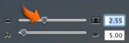

Cropping photos
If you don't want to add motion to a photo, you can still crop it to select only the portion you like or improve its composition.
Cropping is also useful if you're adding a photo whose width-to-height ratio doesn't match the aspect ratio of your movie. If this is the case, you'll see black borders (or letterboxing) around your photo. You can easily crop your photo to remove the letterboxing.
To crop a still photo:
- Click the Media button, and then click Photos at the top of the Media pane.
- Do one of the following:
- If you've already added the photo to your movie, select it in the clip viewer or timeline viewer.
- If you haven't added the photo to your movie, select it in the Photos pane.
- If you don't see the Photo Settings window, click Show Photo Settings.
- In the Photo Settings window, deselect the Ken Burns Effect checkbox.
- Drag the zoom slider (shown below), and then drag the photo in the iMovie monitor to position it how you like.
- Do one of the following:
- To apply your changes to a photo you've selected in the movie, click Update.
- To add the photo to your movie, drag it from the Media pane to the clip viewer or timeline viewer.

Related Topics
 Was this page helpful? Send feedback.
Was this page helpful? Send feedback.